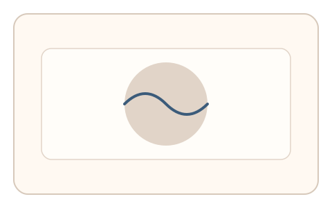
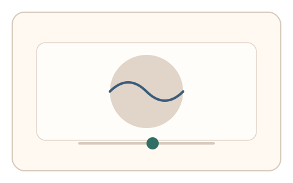
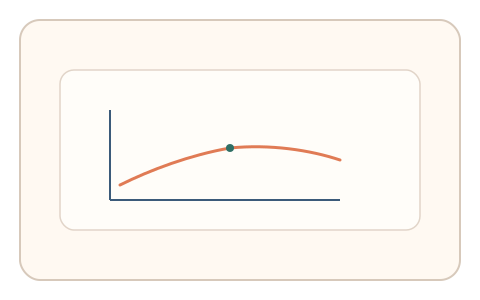

#66
视觉思考范式：Gestalt/对称/频率
已扩展
空间频率阈值
调节 Gabor 条纹到刚可辨识的阈值，用空间频率敏感度与回拉轨迹验证真实性。
概念原文
Gabor 条纹逐渐显隐，用户拖动滑杆到“刚好能辨认条纹”的阈值。记录阈值与回拉轨迹。
依赖人类空间频率敏感度与调整行为。
研究背景
人类对不同空间频率的敏感度存在阈值，Gabor 条纹可用于测量视觉系统对频率与对比的响应。记录阈值与回拉轨迹可形成稳定的感知特征。
核心机制
- 展示 Gabor 条纹并逐步显隐。
- 用户拖动滑杆到“刚好可辨认”。
- 记录阈值位置与回拉轨迹。
- 分析阈值分布与收敛节奏。
用户流程
- 步骤 1：用户看到 Gabor 条纹变化。
- 步骤 2：用户调节滑杆至可辨阈值。
- 步骤 3：系统记录阈值并判定。
判定信号
空间频率阈值
人类视觉对频率的敏感度具有稳定范围。
回拉轨迹与微调节奏
真实调节通常呈现先过后回的路径。
判定逻辑
评估阈值与回拉曲线是否落在人类范围；无回拉或异常阈值判异常。
对抗面
- 脚本固定阈值直接提交
- 重放真实用户的调节序列
防御与缓解
- 随机化频率、相位与对比度
- 加入轻微噪声与背景扰动
- 叠加微时序与轨迹信号进行多信号判定
可达性与风险
提供更低频率或替代任务模式，避免对低视力用户造成负担。
- 显示设备分辨率影响频率可见性
- 环境光线影响阈值判断
可视化状态

状态 1：条纹显隐
Gabor 条纹逐步显隐。

状态 2：阈值调节
用户调节至刚可辨识。

状态 3：阈值判定
分析阈值与回拉路径。
参考资料
Gabor filter
说明 Gabor 条纹与频率测量基础。
Spatial frequency
说明空间频率与视觉敏感度。